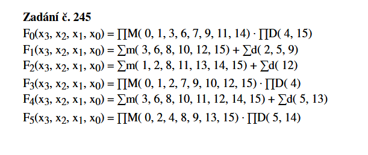
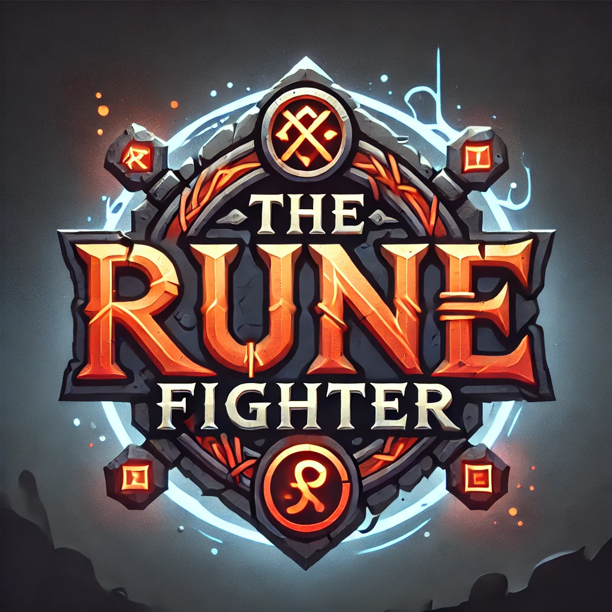
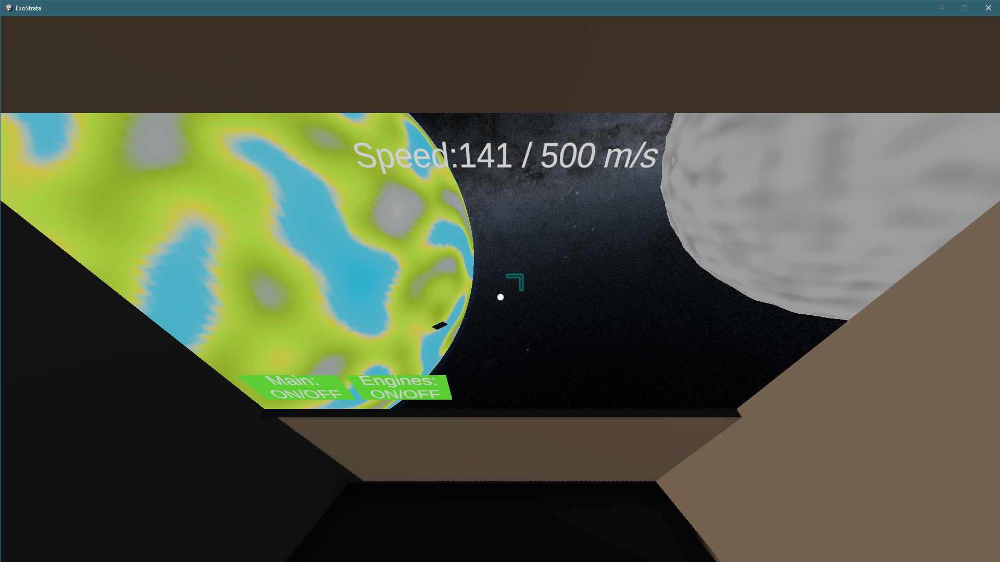

Mé projekty
První semestr na VŠB

Boolean funkce
Úkol byl podle zadání správně minimalizovat a dale pomocí logických hradel realizovat jejich funkčnost v realném světě.
Má ostatní práce

The Rune Fighter
Můj maturitní projekt ze střední školy. The Rune Fighter je pouze demo, je to ukázka programovacích dovedností mě a kolegy, s kterým jsem na tomto projektu pracoval.

Exostrata
Ve volném čase jsem chtěl vyzkoušet udělat vlastní vesmírnou multiplayer hru. Teď má projekt hlavní dvě části a to fyziku lodi, networking a generování náhodných slunečních soustav.